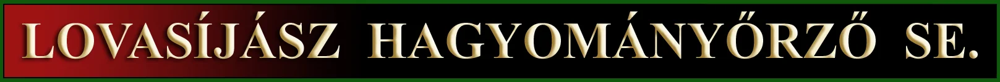
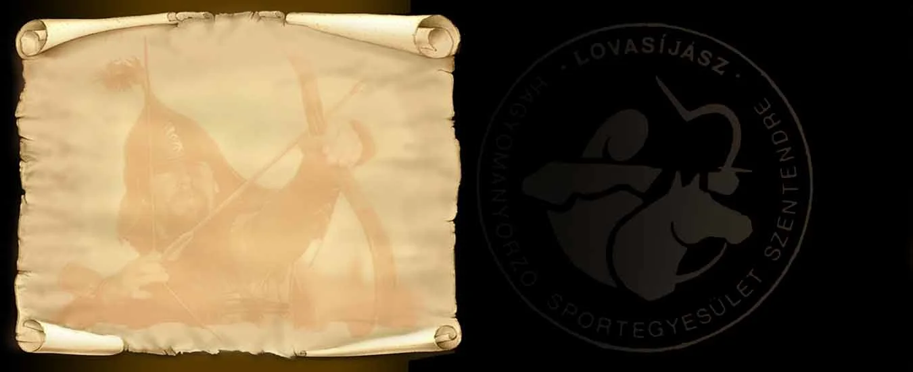

Belegondolni is megdöbbentő, hogy jövőre
egyesületünk alakulásának negyed évszázados jubileumát ünnepelhetjük.
Van-e okunk ünneplésre? Azon szempontok alapján mindenképpen, hogy a legtöbb
hasonló volumenű egyesület ennek töredékét sem érte meg, ezen túl pedig nem csupán
kitartottunk, de az elmúlt huszonöt évben kiemelkedő eredményességgel tevékenykedtünk.
Munkánk gyümölcseit országszerte, de még külföldön is etalonként tartják számon,
gyakorlati/kísérleti régészeti eredményeink mára számos ponton megváltoztatták a
történelemtudomány korábbi alapvetéseit, de magát a szemléletmódot is.
Sikerült sokaknak irányt mutatni, hiszen a gyakorlati tapasztalás nem elmélet,
így nehezen megkérdőjelezhető információkkal szolgál. Nem csoda, hogy negatív
bírálatot sohasem kaptunk. Megalapozottat legalábbis egyetlen egyet sem,
olykor esetleg egy-egy – ténylegesen – építő kritikai észrevételt.
Nem csupán szabadidőnket, energiáinkat rááldozva, magunk által megteremtett anyagi
forrásokból, ún. „társadalmi munkában” végeztük állami alkalmazásban lévő kutatók,
kutatócsoportok, intézmények munkáját. Mégpedig sokszorta hatékonyabban és
sokkalta eredményesebben, az információkat pedig a közösségi értékek gyarapítása
és elismerése céljából közreadtuk, hogy mindenki használhassa. Használja is.
Mindezért nem vártunk, és persze nem is kaptunk különösebb elismerést vagy köszönetet.
Megelégedtünk az eredményességgel. S, hogy ezt teljesebbé tegyük, jubileumunk
alkalmából egy kiadvány összeállítását tervezzük, melyben néhány
elmaradt, de igen jelentős publikációt is megjelentetnénk, hogy emléket állítsunk
egyesületük negyed évszázados tevékenységének. Más úgy sem teszi meg.
{kind=link}
